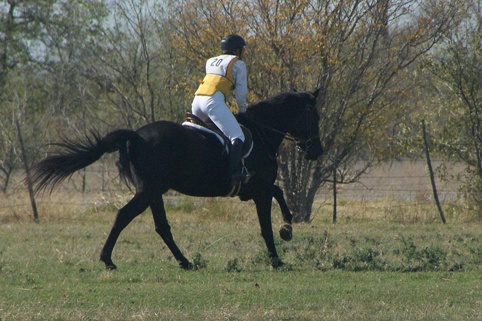

Horse Trial at Curragh
We warmed up nicely for dressage and he felt great to me.
He was very obedient but the judge wanted to see more engagement at the trot and a slower left lead canter.
The stadium warm up was a breeze and he listened at every fence (even when I asked him to jump a bit close).
I was excited about going cross country with a picture in my mind of cantering through the water,
then I got tired and we did a bit of trotting at the water to catch our breath.
So a couple of time penalties, but a clear round.
We ended up in 2nd place.
He's got a pretty good handle on what happens at horse trials now. This was our
first time showing without schooling the day before.
I didn't like walking cross country without a horse, but I was so proud of how we
handled cross country without the nerves.
No sitting at the trailer wondering why I was there and saying it would be fun when
it was over. It was fun in the moment.
So different than the start
of this season where I was clutching to him in warm up. I entered this show not
thinking I would have a trainer along. Huge for me, who said I'd never jump Miaren
without my trainer.
I need to stop this thing with my tongue. I saw it in a picture when I was concentrating
on Thistle. I don't want to accidentally do it during a show.
Steady trot work. I was pushing this ride, because I've had this judge note before
that we needed more forward.
He felt light and swingy, but the judge demonstrated that she wanted more flexing
in the joints (she pranced with her hands and wrists). When we're doing lateral
work and go back to trot we have it, but I haven't figured out how I can ask when
it's straight lines and circles.
A good photograph of my cuing for the canter. This I want to fix. It doesn't seem to make Miaren happy and shortening the leg, lifting the heel and rounding the shoulders isn't in any book of instructions on how to cue the canter. I guess I'm still panicking
and clutching, but I don't have to worry that he's not going to pick it up and he
hasn't bucked in the transition in ages. Bad habits.
At least once we're in it I'm riding it now. I can feel his mouth and think about
bend where we used focus on keeping the canter and then worry about whether he'd
slow down when I asked.
Our downward. I'm gripping with the outside leg because I lost the inside stirrup
in the downward and was trying to post with one stirrup while finding it. We got
dinged here because he drifted off the rail while my inside leg was flailing around.
Luckily a downward transition was there so I had time to get my stirrup back while
we were trying to 'march on'.
I think I've only ridden his true long walk once, and today wasn't that time. My
trainer says it's my nerves, but I've never taught one of my horses a good walk.
I think that's what makes Thistle cool, because someone else taught him how to walk.
At least I know Miaren has one. I just haven't figured out how to get it.
Our canter transition. Used to be his head would get parallel to the ground for
the strike off both directions. At home I can talk to him during the transition
and usually keep him good. This is the best we get so far at shows.
Both ways I still pull up my inside leg. But at least I feel like I'm thinking faster
now and the canter isn't just a blur to get to the downward transition letter.
Leaning in a bit, but at least we're bent to the inside nowadays.

A little more 'prancy', but then also a little bracy with his neck. Rounding doesn't
come automatically for him. Luckily he has a lot of other stuff going for him.
We've got a halt. Sometimes a little more square, but he almost always plants himself
instead of being squirrelly. Of course it's not his fault that we weren't exactly
on the centerline for his great halt.
I asked him to take off a little close and he said sure, if he had to. His backend
sure looks different when he's jumping.
In this stadium round I did a bit more half halting before the jumps. He was fine
with it, but I think I'm used to longer spots now.
He hates having jumps come down. He pulled one in a lesson this week and he sure
wasn't going to let it happen at the show.
He's been jumping a bit higher than this for the past few shows and I don't think
there were many jumps this round that couldn't have been a few inches higher with
the way he played over these.
I think everyone in my division went clear for stadium.
He listened to me even though it ended up burying him at the base of the jump. My
trainer said she watched it and couldn't understand how he got his front end up
and over without touching the fence. It just proves that he might have a better
feel for take off spots than I do.
He didn't hold that last jump against me. He was also having a good time, because
he didn't slow to a trot until we passed this fence again while circling.
Just getting
warmed up.
Fence #1 on cross country. He did a little head shaking out of the box. I wanted
him to canter, and we did, but I guess I was asking but not allowing enough for
the transition.
Cantering to the next fence I'm trying to tell him that there's another jump coming
up.
A bit more contact just before the fence to ask him to balance.
He made it clear he was delighted to be on course. This is just playing to him.
He offered to gallop the stretch to 3, but the rider ahead of me was off her horse
and leading, so it gave me an excuse to hold him to a canter.
They're small fences, but not that small. He just doesn't conserve energy when he's
jumping.
Up the hill to the next one.
He got it pretty quickly that I was going to give as much as I could over the fences.
He took most of them quite comfortably with as easy stride on the landing side.
This was me riding in the back seat. It was the only time I felt him hesitate on
course. The white was glaring in the sun and I wanted him to know that I was committed,
but not jumping ahead in case he did stop.
If I'd have been tentative this could
have gone differently. I'm very pleased he listened to me.
This was unexpected, but it wasn't difficult to ride. Over the jump he shied away
from the training level fence to our right. Seven was far
enough off that it didn't
affect our line, but I had a stride or two of sideways and not forward.
Heading for home and getting tired.
I planned on cantering the water, but I hadn't considered being tired. We
trotted to the water and had to skirt in a bit to actually hit water.
I thought it wouldn't be an issue, and was glad to see how willing he was.
His tail was rather expressive when I took a hold more than he wanted.
He felt like he was listening, so I gave forward, but didn't slip any rein.
I've moved the reins up so there's not much in the way of leverage on the bit. I
was doubting myself a bit after the end of stadium, but he really listened this
run and I know when I got a bit heavy handed I didn't have the extra leverage behind
me to really upset him.
The last fence and looking for the finish flags.

We were a few seconds off time, but it was a pretty steady pace. I need to work
on timing our canter sets so I can start to feel what his gallop is like and realize
that I can still have control at speed. I'm already thinking of how much faster
we'll need to be when we move up a level. When we do, I want to be comfortable.
Thuy and I can do a course at Training Level speed and it's not at all scary. With
Miaren's longer stride it shouldn't be that difficult to go Novice speed. It'll
just take time.